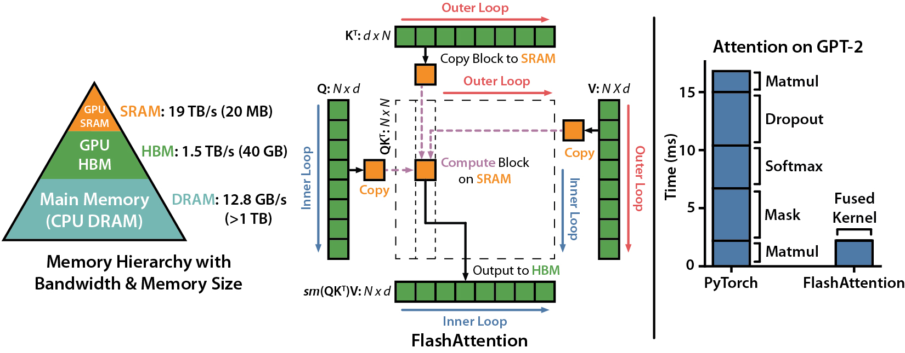
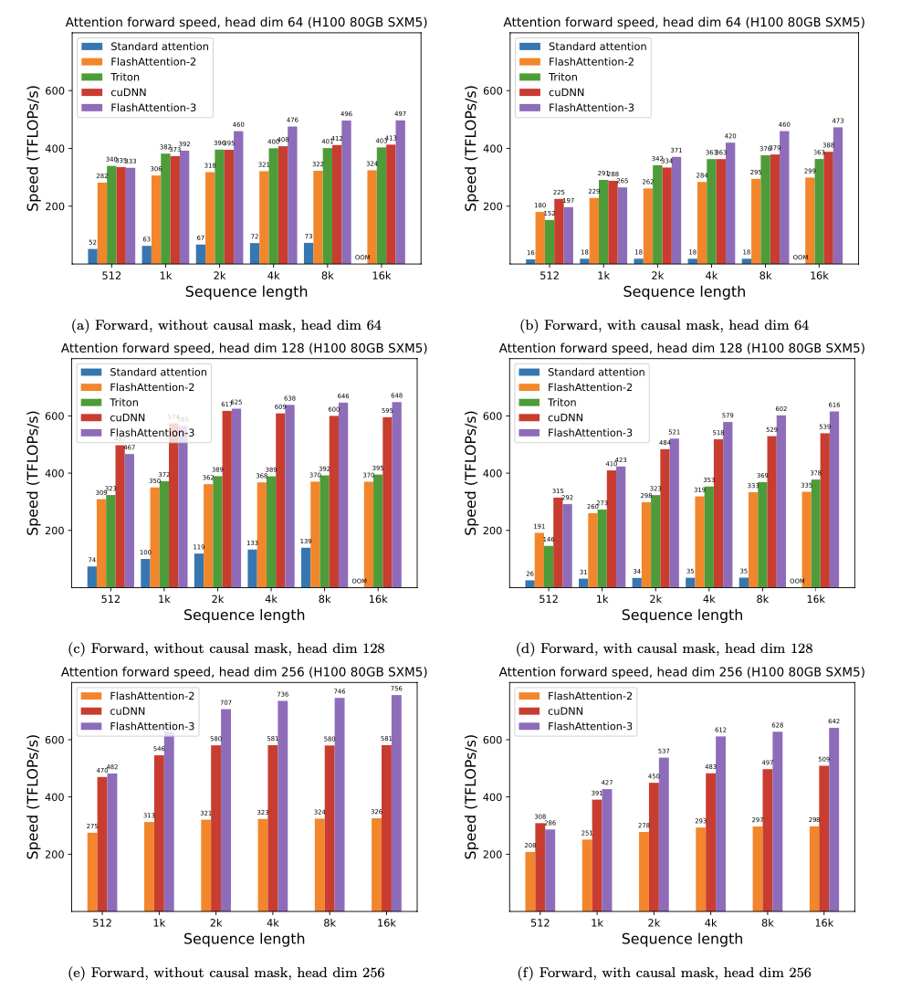
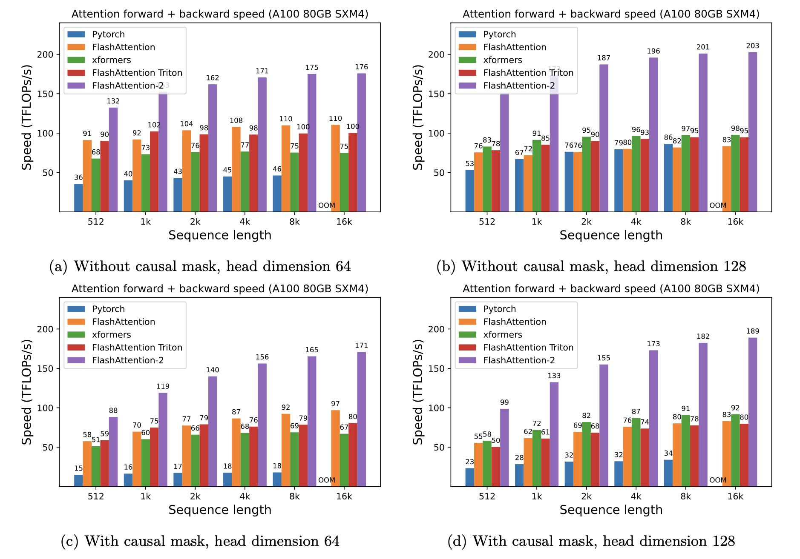
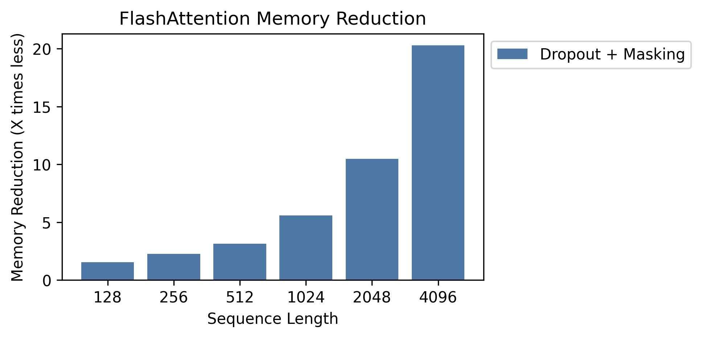
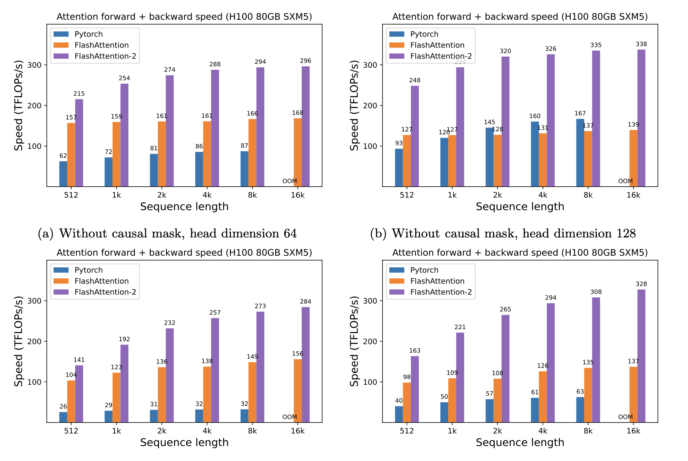

本地原文阅读副本。正文与资料文件已归档；原始响应、版本和校验信息见同目录 manifest.json。网页导航与在线脚本不执行。
This repository provides the official implementation of FlashAttention and FlashAttention-2 from the following papers.
FlashAttention: Fast and Memory-Efficient Exact Attention with IO-Awareness
Tri Dao, Daniel Y. Fu, Stefano Ermon, Atri Rudra, Christopher Ré
Paper: https://arxiv.org/abs/2205.14135
IEEE Spectrum article about our submission to the MLPerf 2.0 benchmark using FlashAttention.

FlashAttention-2: Faster Attention with Better Parallelism and Work Partitioning
Tri Dao
Paper: https://tridao.me/publications/flash2/flash2.pdf
We've been very happy to see FlashAttention being widely adopted in such a short time after its release. This page contains a partial list of places where FlashAttention is being used.
FlashAttention and FlashAttention-2 are free to use and modify (see LICENSE). Please cite and credit FlashAttention if you use it.
FlashAttention-3 is optimized for Hopper GPUs (e.g. H100).
Blogpost: https://tridao.me/blog/2024/flash3/
Paper: https://tridao.me/publications/flash3/flash3.pdf

This is a beta release for testing / benchmarking before we integrate that with the rest of the repo.
Currently released: - FP16 / BF16 forward and backward, FP8 forward
Requirements: H100 / H800 GPU, CUDA >= 12.3.
We highly recommend CUDA 12.8 for best performance.
To install:
cd hopper
python setup.py install
To run the test:
export PYTHONPATH=$PWD
pytest -q -s test_flash_attn.py
Once the package is installed, you can import it as follows:
from flash_attn_3 import flash_attn_interface
flash_attn_interface.flash_attn_func()
To install using uv, in your pyproject.toml:
[project]
dependencies = [
"flash-attn-3"
]
[tool.uv]
no-build-isolation = true
[tool.uv.sources]
flash-attn-3 = { git = "https://github.com/Dao-AILab/flash-attention", subdirectory = "hopper" }
FlashAttention-4 is written in CuTeDSL and optimized for Hopper and Blackwell GPUs (e.g. H100, B200).
To install:
pip install flash-attn-4
If you're on CUDA 13, we recommend installing with the cu13 extra for best performance:
pip install "flash-attn-4[cu13]"
Once installed, you can use it as follows:
from flash_attn.cute import flash_attn_func
out = flash_attn_func(q, k, v, causal=True)
Requirements:
- CUDA toolkit or ROCm toolkit
- PyTorch 2.2 and above.
- packaging Python package (pip install packaging)
- psutil Python package (pip install psutil)
- ninja Python package (pip install ninja) *
- Linux. Might work for Windows starting v2.3.2 (we've seen a few positive reports) but Windows compilation still requires more testing. If you have ideas on how to set up prebuilt CUDA wheels for Windows, please reach out via Github issue.
* Make sure that ninja is installed and that it works correctly (e.g. ninja
--version then echo $? should return exit code 0). If not (sometimes ninja
--version then echo $? returns a nonzero exit code), uninstall then reinstall
ninja (pip uninstall -y ninja && pip install ninja). Without ninja,
compiling can take a very long time (2h) since it does not use multiple CPU
cores. With ninja compiling takes 3-5 minutes on a 64-core machine using CUDA toolkit.
To install:
pip install flash-attn --no-build-isolation
Alternatively you can compile from source:
python setup.py install
If your machine has less than 96GB of RAM and lots of CPU cores, ninja might
run too many parallel compilation jobs that could exhaust the amount of RAM. To
limit the number of parallel compilation jobs, you can set the environment
variable MAX_JOBS:
MAX_JOBS=4 pip install flash-attn --no-build-isolation
Interface: src/flash_attention_interface.py
Requirements: - CUDA 12.0 and above.
We recommend the Pytorch container from Nvidia, which has all the required tools to install FlashAttention.
FlashAttention-2 with CUDA currently supports: 1. Ampere, Ada, or Hopper GPUs (e.g., A100, RTX 3090, RTX 4090, H100). For Turing GPUs (T4, RTX 2080), see the separate flash-attention-turing repo, which supports a core subset of FlashAttention features on Turing. 2. Datatype fp16 and bf16 (bf16 requires Ampere, Ada, or Hopper GPUs). 3. All head dimensions up to 256. ~~Head dim > 192 backward requires A100/A800 or H100/H800~~. Head dim 256 backward now works on consumer GPUs (if there's no dropout) as of flash-attn 2.5.5.
ROCm version has two backends. There is composable_kernel (ck) which is the default backend and a Triton backend. They provide an implementation of FlashAttention-2.
Requirements: - ROCm 6.0 and above.
We recommend the Pytorch container from ROCm, which has all the required tools to install FlashAttention.
FlashAttention-2 ROCm CK backend currently supports: 1. MI200x, MI250x, MI300x, MI355x, and RDNA 3/4 GPUs. 2. Datatype fp16 and bf16 3. Both forward's and backward's head dimensions up to 256.
The Triton implementation of Flash Attention supports AMD's CDNA (MI200, MI300) and RDNA GPUs using fp16, bf16, and fp32 datatypes. It provides forward and backward passes with causal masking, variable sequence lengths, arbitrary Q/KV sequence lengths and head sizes, MQA/GQA, dropout, rotary embeddings, ALiBi, paged attention, and FP8 (via the Flash Attention v3 interface). Sliding window attention is currently a work in progress.
The Triton backend kernels are provided by the aiter package, included as a git submodule at third_party/aiter and automatically installed during setup.
To install, first get PyTorch for ROCm from https://pytorch.org/get-started/locally/, then install Flash Attention:
cd flash-attention
FLASH_ATTENTION_TRITON_AMD_ENABLE="TRUE" pip install --no-build-isolation .
To use a specific aiter commit (e.g., for testing or development):
cd flash-attention
cd third_party/aiter && git fetch origin && git checkout <commit-sha> && cd ../..
FLASH_ATTENTION_TRITON_AMD_ENABLE="TRUE" pip install --no-build-isolation .
To run the tests (note: full suite takes hours):
FLASH_ATTENTION_TRITON_AMD_ENABLE="TRUE" pytest tests/test_flash_attn_triton_amd.py
The Triton backend uses a default kernel configuration optimized for determinism and reasonable performance across workloads. For peak throughput, enable FLASH_ATTENTION_TRITON_AMD_AUTOTUNE="TRUE" to search for optimal settings, which incurs a one-time warmup cost.
Alternativly, if not autotuning, FLASH_ATTENTION_FWD_TRITON_AMD_CONFIG_JSON may be used to set a single triton config overriding the hardcoded defaults for attn_fwd. E.g.
FLASH_ATTENTION_FWD_TRITON_AMD_CONFIG_JSON='{"BLOCK_M":128,"BLOCK_N":64,"waves_per_eu":1,"PRE_LOAD_V":false,"num_stages":1,"num_warps":8}'
For a quick start with Docker:
FROM rocm/pytorch:latest
WORKDIR /workspace
# build flash attention with triton backend
RUN git clone https://github.com/Dao-AILab/flash-attention &&\
cd flash-attention &&\
FLASH_ATTENTION_TRITON_AMD_ENABLE="TRUE" pip install --no-build-isolation .
# set working dir
WORKDIR /workspace/flash-attention
# set env variable to use triton backend
ENV FLASH_ATTENTION_TRITON_AMD_ENABLE="TRUE"
Build and run:
docker build -t flash-attn-triton .
docker run -it --network=host --user root --group-add video --cap-add=SYS_PTRACE --security-opt seccomp=unconfined --ipc=host --shm-size 16G --device=/dev/kfd --device=/dev/dri flash-attn-triton
The main functions implement scaled dot product attention (softmax(Q @ K^T * softmax_scale) @ V):
from flash_attn import flash_attn_qkvpacked_func, flash_attn_func
flash_attn_qkvpacked_func(qkv, dropout_p=0.0, softmax_scale=None, causal=False,
window_size=(-1, -1), alibi_slopes=None, deterministic=False):
"""dropout_p should be set to 0.0 during evaluation
If Q, K, V are already stacked into 1 tensor, this function will be faster than
calling flash_attn_func on Q, K, V since the backward pass avoids explicit concatenation
of the gradients of Q, K, V.
If window_size != (-1, -1), implements sliding window local attention. Query at position i
will only attend to keys between [i - window_size[0], i + window_size[1]] inclusive.
Arguments:
qkv: (batch_size, seqlen, 3, nheads, headdim)
dropout_p: float. Dropout probability.
softmax_scale: float. The scaling of QK^T before applying softmax.
Default to 1 / sqrt(headdim).
causal: bool. Whether to apply causal attention mask (e.g., for auto-regressive modeling).
window_size: (left, right). If not (-1, -1), implements sliding window local attention.
alibi_slopes: (nheads,) or (batch_size, nheads), fp32. A bias of (-alibi_slope * |i - j|) is added to
the attention score of query i and key j.
deterministic: bool. Whether to use the deterministic implementation of the backward pass,
which is slightly slower and uses more memory. The forward pass is always deterministic.
Return:
out: (batch_size, seqlen, nheads, headdim).
"""
flash_attn_func(q, k, v, dropout_p=0.0, softmax_scale=None, causal=False,
window_size=(-1, -1), alibi_slopes=None, deterministic=False):
"""dropout_p should be set to 0.0 during evaluation
Supports multi-query and grouped-query attention (MQA/GQA) by passing in KV with fewer heads
than Q. Note that the number of heads in Q must be divisible by the number of heads in KV.
For example, if Q has 6 heads and K, V have 2 heads, head 0, 1, 2 of Q will attention to head
0 of K, V, and head 3, 4, 5 of Q will attention to head 1 of K, V.
If window_size != (-1, -1), implements sliding window local attention. Query at position i
will only attend to keys between
[i + seqlen_k - seqlen_q - window_size[0], i + seqlen_k - seqlen_q + window_size[1]] inclusive.
Arguments:
q: (batch_size, seqlen, nheads, headdim)
k: (batch_size, seqlen, nheads_k, headdim)
v: (batch_size, seqlen, nheads_k, headdim)
dropout_p: float. Dropout probability.
softmax_scale: float. The scaling of QK^T before applying softmax.
Default to 1 / sqrt(headdim).
causal: bool. Whether to apply causal attention mask (e.g., for auto-regressive modeling).
window_size: (left, right). If not (-1, -1), implements sliding window local attention.
alibi_slopes: (nheads,) or (batch_size, nheads), fp32. A bias of
(-alibi_slope * |i + seqlen_k - seqlen_q - j|)
is added to the attention score of query i and key j.
deterministic: bool. Whether to use the deterministic implementation of the backward pass,
which is slightly slower and uses more memory. The forward pass is always deterministic.
Return:
out: (batch_size, seqlen, nheads, headdim).
"""
def flash_attn_with_kvcache(
q,
k_cache,
v_cache,
k=None,
v=None,
rotary_cos=None,
rotary_sin=None,
cache_seqlens: Optional[Union[(int, torch.Tensor)]] = None,
cache_batch_idx: Optional[torch.Tensor] = None,
block_table: Optional[torch.Tensor] = None,
softmax_scale=None,
causal=False,
window_size=(-1, -1), # -1 means infinite context window
rotary_interleaved=True,
alibi_slopes=None,
):
"""
If k and v are not None, k_cache and v_cache will be updated *inplace* with the new values from
k and v. This is useful for incremental decoding: you can pass in the cached keys/values from
the previous step, and update them with the new keys/values from the current step, and do
attention with the updated cache, all in 1 kernel.
If you pass in k / v, you must make sure that the cache is large enough to hold the new values.
For example, the KV cache could be pre-allocated with the max sequence length, and you can use
cache_seqlens to keep track of the current sequence lengths of each sequence in the batch.
Also apply rotary embedding if rotary_cos and rotary_sin are passed in. The key @k will be
rotated by rotary_cos and rotary_sin at indices cache_seqlens, cache_seqlens + 1, etc.
If causal or local (i.e., window_size != (-1, -1)), the query @q will be rotated by rotary_cos
and rotary_sin at indices cache_seqlens, cache_seqlens + 1, etc.
If not causal and not local, the query @q will be rotated by rotary_cos and rotary_sin at
indices cache_seqlens only (i.e. we consider all tokens in @q to be at position cache_seqlens).
See tests/test_flash_attn.py::test_flash_attn_kvcache for examples of how to use this function.
Supports multi-query and grouped-query attention (MQA/GQA) by passing in KV with fewer heads
than Q. Note that the number of heads in Q must be divisible by the number of heads in KV.
For example, if Q has 6 heads and K, V have 2 heads, head 0, 1, 2 of Q will attention to head
0 of K, V, and head 3, 4, 5 of Q will attention to head 1 of K, V.
If causal=True, the causal mask is aligned to the bottom right corner of the attention matrix.
For example, if seqlen_q = 2 and seqlen_k = 5, the causal mask (1 = keep, 0 = masked out) is:
1 1 1 1 0
1 1 1 1 1
If seqlen_q = 5 and seqlen_k = 2, the causal mask is:
0 0
0 0
0 0
1 0
1 1
If the row of the mask is all zero, the output will be zero.
If window_size != (-1, -1), implements sliding window local attention. Query at position i
will only attend to keys between
[i + seqlen_k - seqlen_q - window_size[0], i + seqlen_k - seqlen_q + window_size[1]] inclusive.
Note: Does not support backward pass.
Arguments:
q: (batch_size, seqlen, nheads, headdim)
k_cache: (batch_size_cache, seqlen_cache, nheads_k, headdim) if there's no block_table,
or (num_blocks, page_block_size, nheads_k, headdim) if there's a block_table (i.e. paged KV cache)
page_block_size must be a multiple of 256.
v_cache: (batch_size_cache, seqlen_cache, nheads_k, headdim) if there's no block_table,
or (num_blocks, page_block_size, nheads_k, headdim) if there's a block_table (i.e. paged KV cache)
k [optional]: (batch_size, seqlen_new, nheads_k, headdim). If not None, we concatenate
k with k_cache, starting at the indices specified by cache_seqlens.
v [optional]: (batch_size, seqlen_new, nheads_k, headdim). Similar to k.
rotary_cos [optional]: (seqlen_ro, rotary_dim / 2). If not None, we apply rotary embedding
to k and q. Only applicable if k and v are passed in. rotary_dim must be divisible by 16.
rotary_sin [optional]: (seqlen_ro, rotary_dim / 2). Similar to rotary_cos.
cache_seqlens: int, or (batch_size,), dtype torch.int32. The sequence lengths of the
KV cache.
block_table [optional]: (batch_size, max_num_blocks_per_seq), dtype torch.int32.
cache_batch_idx: (batch_size,), dtype torch.int32. The indices used to index into the KV cache.
If None, we assume that the batch indices are [0, 1, 2, ..., batch_size - 1].
If the indices are not distinct, and k and v are provided, the values updated in the cache
might come from any of the duplicate indices.
softmax_scale: float. The scaling of QK^T before applying softmax.
Default to 1 / sqrt(headdim).
causal: bool. Whether to apply causal attention mask (e.g., for auto-regressive modeling).
window_size: (left, right). If not (-1, -1), implements sliding window local attention.
rotary_interleaved: bool. Only applicable if rotary_cos and rotary_sin are passed in.
If True, rotary embedding will combine dimensions 0 & 1, 2 & 3, etc. If False,
rotary embedding will combine dimensions 0 & rotary_dim / 2, 1 & rotary_dim / 2 + 1
(i.e. GPT-NeoX style).
alibi_slopes: (nheads,) or (batch_size, nheads), fp32. A bias of
(-alibi_slope * |i + seqlen_k - seqlen_q - j|)
is added to the attention score of query i and key j.
Return:
out: (batch_size, seqlen, nheads, headdim).
"""
To see how these functions are used in a multi-head attention layer (which includes QKV projection, output projection), see the MHA implementation.
If your hardware environment belongs to any of the above-mentioned, you can also use the kernels library
to use Flash Attention 2 and 3 right away.
# pip install kernels
from kernels import get_kernel
# FA2
fa_module = get_kernel("kernels-community/flash-attn2", version=1)
flash_attn_func = fa_module.flash_attn_func
# FA3
fa3_module = get_kernel("kernels-community/flash-attn3", version=1)
flash_attn_func = fa3_module.flash_attn_func
Upgrading from FlashAttention (1.x) to FlashAttention-2
These functions have been renamed:
- flash_attn_unpadded_func -> flash_attn_varlen_func
- flash_attn_unpadded_qkvpacked_func -> flash_attn_varlen_qkvpacked_func
- flash_attn_unpadded_kvpacked_func -> flash_attn_varlen_kvpacked_func
If the inputs have the same sequence lengths in the same batch, it is simpler and faster to use these functions:
flash_attn_qkvpacked_func(qkv, dropout_p=0.0, softmax_scale=None, causal=False)
flash_attn_func(q, k, v, dropout_p=0.0, softmax_scale=None, causal=False)
If seqlen_q != seqlen_k and causal=True, the causal mask is aligned to the bottom right corner of the attention matrix, instead of the top-left corner.
For example, if seqlen_q = 2 and seqlen_k = 5, the causal mask (1 = keep, 0 =
masked out) is:
v2.0:
1 0 0 0 0
1 1 0 0 0
v2.1:
1 1 1 1 0
1 1 1 1 1
If seqlen_q = 5 and seqlen_k = 2, the causal mask is:
v2.0:
1 0
1 1
1 1
1 1
1 1
v2.1:
0 0
0 0
0 0
1 0
1 1
If the row of the mask is all zero, the output will be zero.
Optimize for inference (iterative decoding) when query has very small sequence length (e.g., query sequence length = 1). The bottleneck here is to load KV cache as fast as possible, and we split the loading across different thread blocks, with a separate kernel to combine results.
See the function flash_attn_with_kvcache with more features for inference
(perform rotary embedding, updating KV cache inplace).
Thanks to the xformers team, and in particular Daniel Haziza, for this collaboration.
Implement sliding window attention (i.e., local attention). Thanks to Mistral AI and in particular Timothée Lacroix for this contribution. Sliding window was used in the Mistral 7B model.
Implement ALiBi (Press et al., 2021). Thanks to Sanghun Cho from Kakao Brain for this contribution.
Implement deterministic backward pass. Thanks to engineers from Meituan for this contribution.
Support paged KV cache (i.e., PagedAttention). Thanks to @beginlner for this contribution.
Support attention with softcapping, as used in Gemma-2 and Grok models. Thanks to @Narsil and @lucidrains for this contribution.
Thanks to @ani300 for this contribution.
We present expected speedup (combined forward + backward pass) and memory savings from using FlashAttention against PyTorch standard attention, depending on sequence length, on different GPUs (speedup depends on memory bandwidth - we see more speedup on slower GPU memory).
We currently have benchmarks for these GPUs: * A100 * H100
We display FlashAttention speedup using these parameters: * Head dimension 64 or 128, hidden dimension 2048 (i.e. either 32 or 16 heads). * Sequence length 512, 1k, 2k, 4k, 8k, 16k. * Batch size set to 16k / seqlen.


We show memory savings in this graph (note that memory footprint is the same no matter if you use dropout or masking). Memory savings are proportional to sequence length -- since standard attention has memory quadratic in sequence length, whereas FlashAttention has memory linear in sequence length. We see 10X memory savings at sequence length 2K, and 20X at 4K. As a result, FlashAttention can scale to much longer sequence lengths.

We have released the full GPT model implementation. We also provide optimized implementations of other layers (e.g., MLP, LayerNorm, cross-entropy loss, rotary embedding). Overall this speeds up training by 3-5x compared to the baseline implementation from Huggingface, reaching up to 225 TFLOPs/sec per A100, equivalent to 72% model FLOPs utilization (we don't need any activation checkpointing).
We also include a training script to train GPT2 on Openwebtext and GPT3 on The Pile.
Phil Tillet (OpenAI) has an experimental implementation of FlashAttention in Triton: https://github.com/openai/triton/blob/master/python/tutorials/06-fused-attention.py
As Triton is a higher-level language than CUDA, it might be easier to understand and experiment with. The notations in the Triton implementation are also closer to what's used in our paper.
We also have an experimental implementation in Triton that support attention bias (e.g. ALiBi): https://github.com/Dao-AILab/flash-attention/blob/main/flash_attn/flash_attn_triton.py
We test that FlashAttention produces the same output and gradient as a reference implementation, up to some numerical tolerance. In particular, we check that the maximum numerical error of FlashAttention is at most twice the numerical error of a baseline implementation in Pytorch (for different head dimensions, input dtype, sequence length, causal / non-causal).
To run the tests:
pytest -q -s tests/test_flash_attn.py
This new release of FlashAttention-2 has been tested on several GPT-style models, mostly on A100 GPUs.
If you encounter bugs, please open a GitHub Issue!
To run the tests:
pytest tests/test_flash_attn_ck.py
If you use this codebase, or otherwise found our work valuable, please cite:
@inproceedings{dao2022flashattention,
title={Flash{A}ttention: Fast and Memory-Efficient Exact Attention with {IO}-Awareness},
author={Dao, Tri and Fu, Daniel Y. and Ermon, Stefano and Rudra, Atri and R{\'e}, Christopher},
booktitle={Advances in Neural Information Processing Systems (NeurIPS)},
year={2022}
}
@inproceedings{dao2023flashattention2,
title={Flash{A}ttention-2: Faster Attention with Better Parallelism and Work Partitioning},
author={Dao, Tri},
booktitle={International Conference on Learning Representations (ICLR)},
year={2024}
}